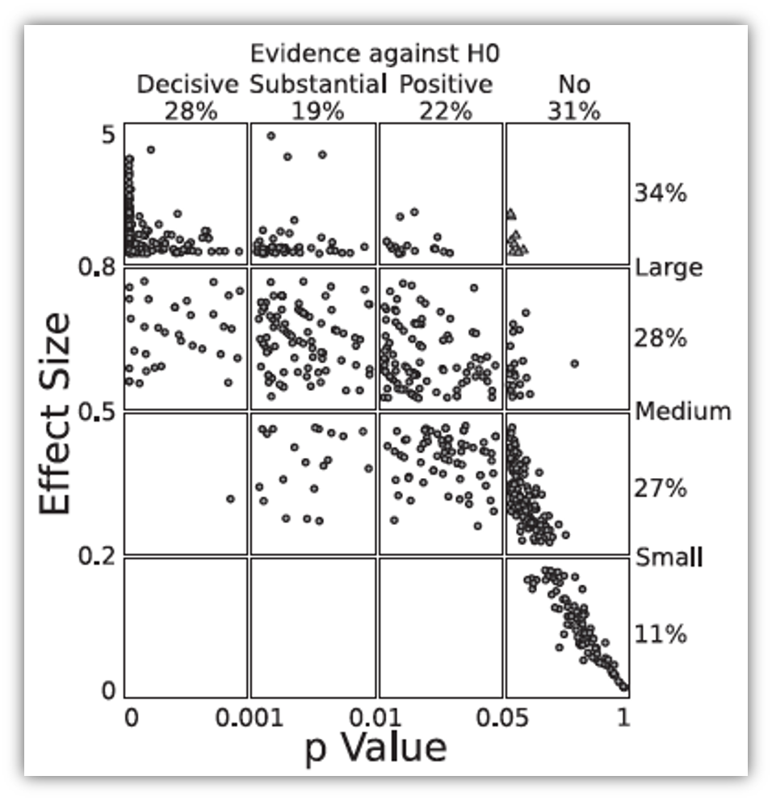
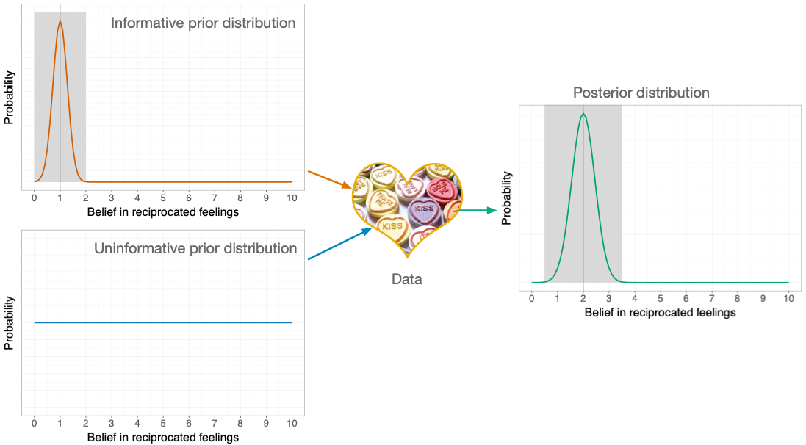
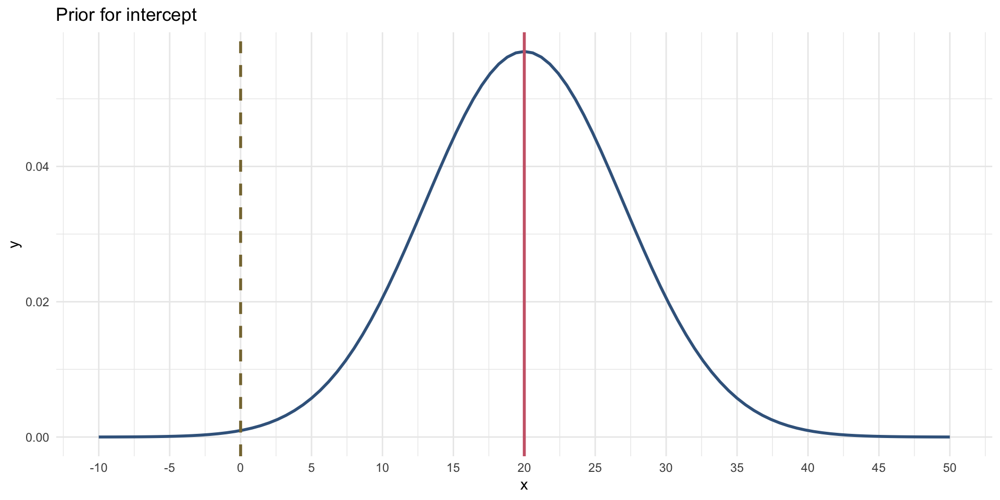
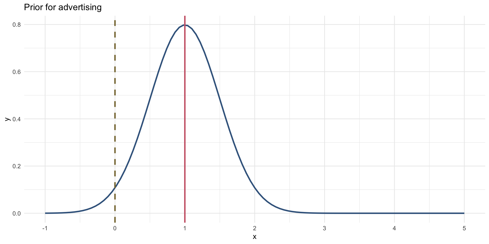
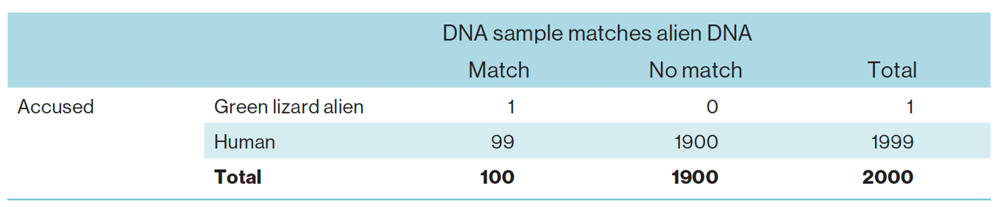
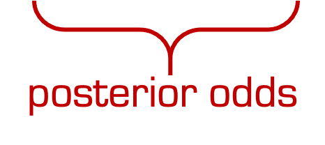
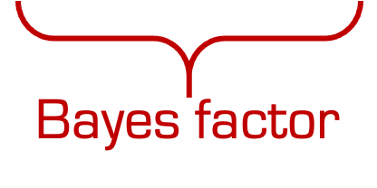
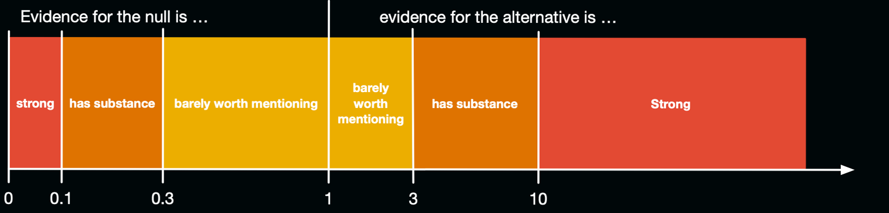
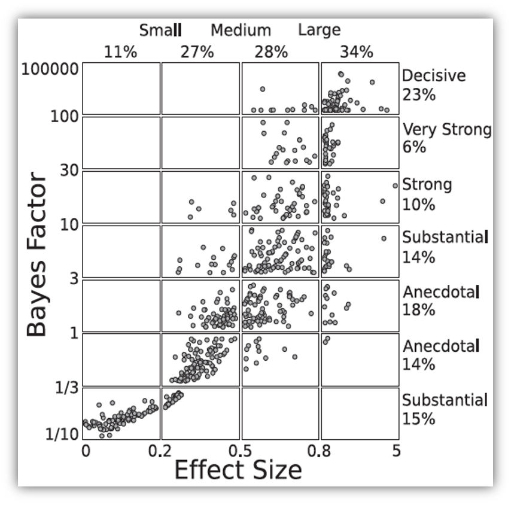
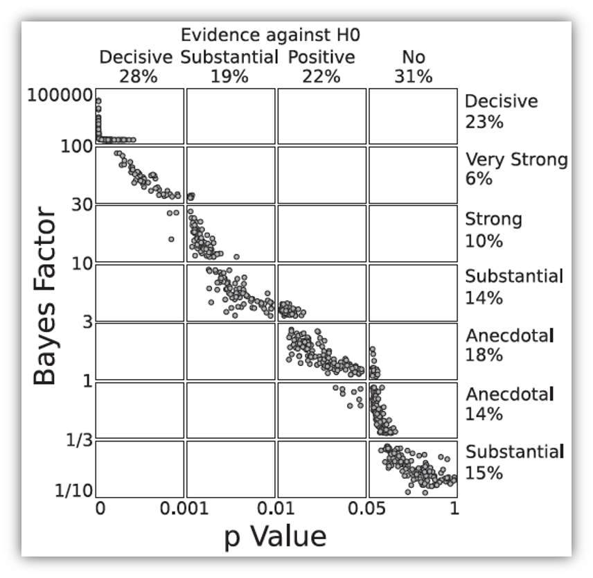

| Parameter | Coefficient | SE | 95% CI | t(198) | p |
|---|---|---|---|---|---|
| (Intercept) | 134.14 | 7.54 | (119.28, 149.00) | 17.80 | < .001 |
| adverts | 0.10 | 9.63e-03 | (0.08, 0.12) | 9.98 | < .001 |
Bayesian Approaches
What are they and why do we need them?
Professor Andy Field
University of Sussex


|
Learning outcomes
Bayes factors
- Articulate the principles of Bayesian approaches
- Define what a Bayes factor represents
Bayesian estimation
- Uninformative priors
- Informatibe priors
- Interpretation


Problems with p – A recap
- Tells us nothing about importance because p depends upon sample size.
- Provides little evidence about the null (or alternative) hypothesis
- Encourages all-or-nothing thinking
- Based on long-run probabilities
- p is the frequency of the observed test statistic relative to all test statistics from an infinite number of identical experiments with the exact same a priori sample size.
- The type I error rate is in a given study is either 0 or 1, but we don’t know which.
Effect sizes and p
- Wetzels et al. (2011). Statistical Evidence in Experimental Psychology: An Empirical Comparison Using 855 t-tests. Perspectives on Psychological Science, 6, 291–298. https://doi.org/10.1177/1745691611406923

Bayesian estimation

A musical example1
Outcome
sales: Revenue from physical, download and streamed album sales in first week (£ thousands)
Predictors
adverts: amount spent promoting the album before release (£ thousands)airplay: how many times songs from the album were played on a prominent national radio station in the week before releaseimage: ratings of the ‘look’ of the band out of 10
The model
\[ \begin{aligned} \text{Sales}_i & = b_0 + b_1\text{Advertising}_i + \varepsilon_i \\ \varepsilon_i &\sim N(0, \sigma^2) \end{aligned} \]
Priors
- You need a prior for each parameter in the model
- \(b_0\)
- \(b_1\)
- \(\sigma^2\)
- Uninformative priors
- A.K.A ‘flat priors’
- Uniform distribution or very wide distribution
- Estimates heavily data-driven
OLS
Bayesian
| Parameter | Median | 95% CI | pd | Rhat | ESS | Prior |
|---|---|---|---|---|---|---|
| (Intercept) | 133.88 | (119.79, 148.91) | 100% | 1.000 | 3624 | Normal (193.20 +- 201.75) |
| adverts | 0.10 | (0.08, 0.11) | 100% | 1.000 | 4006 | Normal (0.00 +- 0.42) |
Confidence vs. Credible intervals
The danger zone!
What confidence intervals are NOT:
- There is NOT a 95% probability that a given interval contains the population value.
- It is p = 0 or p = 1, but you can’t know which!
- They do NOT reflect confidence in the value of the population parameter.
Statis-tip
What credible intervals ARE:
- Intervals that contain the ‘true’ population value of the parameter in 95% of samples
Informative priors
- Reflect prior knowledge
- The prior exerts more influence on estimates than an uninformative prior
- Can be strong
- A narrow distribution
- The prior has more influence that for a weak prior
- Can be weak
- A wider distribution
- The prior has less influence that for a strong prior
- ‘Congugate’ distributions
- Normal, Gamma, Beta
Prior for the intercept (\(b_0\))
Think about it!
- What do we already know about album sales when advertising = £0
- Historic data:
- Expect 20,000 sales on average
- It varies for different artists (SD = 7,000)
\[ b_0 \sim N(20, 7) \]

Prior for the effect of advertising (\(b_1\))
Think about it!
Historic data: - For every £1000 pounds they spend on advertising they can expect 1000 album sales. This equates to a \(b\) = 1. - Although spending money on advertising typically increases sales, they have been known to go down.
\[ b_1 \sim N(1, 0.5) \]

OLS
| Parameter | Coefficient | SE | 95% CI | t(198) | p |
|---|---|---|---|---|---|
| (Intercept) | 134.14 | 7.54 | (119.28, 149.00) | 17.80 | < .001 |
| adverts | 0.10 | 9.63e-03 | (0.08, 0.12) | 9.98 | < .001 |
Bayesian
| Parameter | Median | 95% CI | pd | Rhat | ESS | Prior |
|---|---|---|---|---|---|---|
| (Intercept) | 26.84 | (-1.86, 53.87) | 96.12% | 1.001 | 2173 | Normal (20 +- 7.00) |
| adverts | 0.10 | (0.06, 0.13) | 100% | 1.001 | 2675 | Normal (1 +- 0.50) |
Bayes Factors
Bayes theorem
\[ \begin{aligned} p(\text{A}|\text{B}) &= \frac{p(\text{B}|\text{A})\times p(\text{A})}{p(\text{B})} \end{aligned} \]
\[ \begin{aligned} p(\text{model}|\text{data}) &= \frac{p(\text{data}|\text{model})\times p(\text{model})}{p(\text{data})} \end{aligned} \]
\[ \begin{aligned} \text{posterior probability} &= \frac{\text{liklihood}\times \text{prior probability}}{\text{marginal liklihood}} \end{aligned} \]
Null hypothesis: You’re human
Null hypothesis: You’re human
Alt hypothesis: You’re alien!

\[ \begin{aligned} p(\text{hypothesis}|\text{match}) &= \frac{p(\text{match}|\text{hypothesis})\times p(\text{hypothesis})}{p(\text{match})} \end{aligned} \]
\[ \begin{aligned} \text{posterior probability} &= \frac{\text{liklihood}\times \text{prior probability}}{\text{marginal liklihood}} \end{aligned} \]
\[ \begin{aligned} \text{prior probability} = p(\text{alien}) = \frac{1}{2000} = 0.0005 \end{aligned} \]
\[ \begin{aligned} \text{marginal liklihood} = p(\text{match}) = \frac{100}{2000} = 0.05 \end{aligned} \]
\[ \begin{aligned} \text{liklihood} = p(\text{match}|\text{alien}) = \frac{p(\text{alien} \cap \text{match})}{p(\text{alien})} = \frac{\frac{1}{2000}}{\frac{1}{2000}} = 1 \end{aligned} \]
Alternative hypothesis (you’re alien)
\[ \begin{aligned} p(\text{alien}|\text{match}) &= \frac{p(\text{match}|\text{alien})\times p(\text{alien})}{p(\text{match})} \\ &= \frac{1\times 0.0005}{0.05} \\ &= 0.01 \end{aligned} \]
\[ \begin{aligned} \text{prior probability} = p(\text{human}) = \frac{1999}{2000} = 0.9995 \end{aligned} \]
\[ \begin{aligned} \text{marginal liklihood} = p(\text{match}) = \frac{100}{2000} = 0.05 \end{aligned} \]
\[ \begin{aligned} \text{liklihood} = p(\text{match}|\text{human}) = \frac{p(\text{human} \cap \text{match})}{p(\text{human})} = \frac{\frac{99}{2000}}{\frac{1999}{2000}} = 0.0495 \end{aligned} \]
Null hypothesis (you’re human)
\[ \begin{aligned} p(\text{human}|\text{match}) &= \frac{p(\text{match}|\text{human})\times p(\text{human})}{p(\text{match})} \\ &= \frac{0.0495\times 0.9995}{0.05} \\ &= 0.99 \end{aligned} \]
\[ \begin{aligned} \text{posterior odds} = \frac{p(\text{hypothesis 1}|\text{data})}{p(\text{hypothesis 2}|\text{data})} = \frac{p(\text{alien}|\text{match})}{p(\text{human}|\text{match})} = \frac{0.01}{0.99} = 0.01 \end{aligned} \]
\[ \begin{aligned} \frac{p(\text{alternative}|\text{data})}{p(\text{null}|\text{data})} = \frac{\frac{p(\text{data}|\text{alternative})\times p(\text{alternative})}{p({\text{data})}}}{\frac{p(\text{data}|\text{null})\times p(\text{null})}{p({\text{data})}}} = \frac{p(\text{alien}|\text{match})}{p(\text{human}|\text{match})} = \frac{0.01}{0.99} = 0.01 \end{aligned} \]
\[ \begin{aligned} \frac{p(\text{alternative}|\text{data})}{p(\text{null}|\text{data})} = \frac{p(\text{data}|\text{alternative})}{p(\text{data}|\text{null})} \times \frac{p(\text{alternative})}{p(\text{null})} \end{aligned} \]


\[ \begin{aligned} \frac{p(\text{alien}|\text{match})}{p(\text{human}|\text{match})} = \frac{p(\text{match}|\text{alien})}{p(\text{match}|\text{human})} \times \frac{p(\text{alien})}{p(\text{human})} \end{aligned} \]
\[ \begin{aligned} \frac{0.01}{0.99} &= \frac{1}{0.0495} \times \frac{0.0005}{0.9995} \\ 0.01 &= 20.20 \times 0.0005 \end{aligned} \]
Statis-tip
- Given a DNA match, we should shift our belief towards that person being an alien by a factor of about 20
Bayes factor (BF10)
The probability of the data given the alternative hypothesis relative to the probability of the data given the null.
The extent to which you should change your beliefs about the alternative hypothesis relative to the null
You sometimes see Bayes factors expressed the opposite way around (BF01)

Bayes factors, p and effect sizes1


Back to album sales
| Parameter | Median | 95% CI | BF | Rhat | ESS | Prior |
|---|---|---|---|---|---|---|
| (Intercept) | 26.84 | (-1.86, 53.87) | 0.034 | 1.001 | 2173 | Normal (20 +- 7.00) |
| adverts | 0.10 | (0.06, 0.13) | 421.08 | 1.001 | 2675 | Normal (1 +- 0.50) |
- We should shift our beliefs in advertising having a non-zero relationship to sales by a factor of about 421.
Summary
- We can go beyond p to evaluate the plausibility of a hypothesis
- Other methods address more useful questions, are less dependent on sample sizes, and avoid all-or-nothing thinking
- Bayesian estimation allows us to factor in prior knowledge
- Credible intervals tell us the plausible population values
- Bayes factors quantify the relative probability of the data given the null and alternative hypothesis